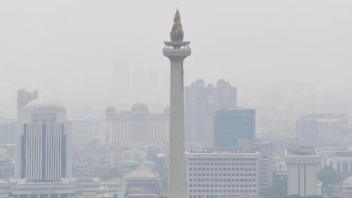

Oleh : Saya
Kementerian Perindustrian (Kemenperin) beranggapan kualitas udara di Jakarta dan kota di sekelilingnya tetap tidak sehat pada Sabtu (2/9) meski volume kendaraan lebih sedikit. Hal ini mengindikasikan ada faktor di luar transportasi sebagai penyebab kualitas udara Jakarta pada akhir pekan sama buruknya sewaktu hari kerja. Dalam siaran resminya Kemenperin menjelaskan kualitas udara di Jakarta, Bogor, Bekasi, Tangerang dan Depok (Jabodetabek) pada Sabtu (2/9) menunjukkan indeks 168 (tidak sehat) dan konsentrasi Particulate Matter (PM) 2,5 mencapai 19,3 kali nilai panduan kualitas udara tahunan dari Wolrd Health Organization (WHO). Kondisi itu terjadi pada pagi hari hingga pukul 11.00 WIB berdasarkan situs IQair.com yang merupakan terburuk dibanding sepanjang Agustus.
Dirjen Pengendalian Pencemaran dan Kerusakan Lingkungan (PPKL) KLHK, Sigit Reliantoro, mengatakan penyebab polusi udara di Jakarta karena telah dipengaruhi angin dari wilayah timur. "Jadi kalau dari segi siklus memang bulan Juni, Juli, Agustus itu selalu terjadi peningkatan pencemaran di Jakarta karena dipengaruhi oleh udara dari timur yang kering," kata Sigit di Direktorat Jenderal Pengendalian Pencemaran dan Kerusakan Lingkungan KLHK, Kebon Nanas, Jakarta Timur, Jumat (11/8/2023).
Selain itu, Sigit juga mengungkapkan bahwa polusi udara juga dipicu oleh emisi transportasi. Ia mengatakan bahwa sektor transportasi telah menyumbang emisi terbesar, yakni hingga 44%. "Jadi kalau dari segi bahan bakar yang digunakan di DKI Jakarta itu bahan bakar itu adalah sumber emisi, itu adalah dari batu bara 0,42 persen, dari minyak itu 49 persen, dan dari gas itu 51 persen. Kalau dilihat dari sektor-sektornya maka transportasi itu 44 persen, industri 31 persen industri energi, manufaktur 10 persen, perumahan 14 persen, dan komersial 1 persen," ujarnya. "Ini lebih didetailkan lagi oleh kajian tersebut bahwa kalau SO2 (sulfur) memang berasal dari PLTU, manufacturing. Jadi manufacturing, pembangkit tenaga listrik dari industri manufacturing 61,96 persen. Kalau yang lainnya NoX, Co PM 10, PM 2,5, black carbon, kemudian organic carbon itu sebagian besar disebabkan oleh kendaraan bermotor," papar Sigit lebih lanjut.
Sementara itu, Plt Deputi Bidang Klimatologi BMKG Ardhasena Sopaheluwakan mengatakan penyebab kualitas udara Jakarta memburuk dalam beberapa pekan terakhir karena dipengaruhi oleh musim kemarau yang tengah berlangsung. "Kecenderungannya biasanya pada saat musim kemarau kualitas udara cenderung naik dan seperti yang kita lihat sekarang," ujar Ardhasena dalam jumpa pers di Jakarta, Jumat (11/8/2023).
Direktur Jenderal Penegakan Hukum Lingkungan Hidup dan Kehutanan (Gakkum) Kementerian LHK, Rasio Ridho Sani memaparkan, ada dua sumber utama polusi udara di Jakarta dalam beberapa pekan terakhir, yakni berasal dari asap kendaraan bermotor dan pembangkit listrik. "Pertama, sumber-sumber kendaraan bermotor. Kedua, sumber-sumber dari kegiatan industri, termasuk di dalamnya pembangkit listrik maupun kegiatan-kegiatan pembakaran terbuka yang dilakukan oleh masyarakat ataupun pihak-pihak lainnya," kata Rasio dalam konferensi pers di kantornya, Rabu (23/8/2023). "Jadi ini sumber-sumber yang kami identifikasi sejauh ini. Namun kami diminta dalami lagi sumber besarnya," paparnya. KLHK akan melakukan pengawasan dengan membentuk tim untuk menyelidiki sumber polusi dari industri dan pembangkit listrik. Sementara itu, untuk sumber polusi dari kendaraan bermotor, KLHK berharap dilakukan uji emisi di Jabodetabek.
| ISPU | Level | Dampak Kesehatan |
|---|---|---|
| 0-50 | Baik | Tidak memberi dampak kesehatan bagi manusia dan hewan |
| 51-100 | Sedang | Tidak memberi dampak kesehatan bagi manusia dan hewan namun berpengaruh bagi tumbuhan yang peka |
| 101-199 | Tidak Sehat | Merugikan manusia, hewan, dam tumbuhana |
| 201-300 | Sangat Tidak Sehat | Meningkatkan resiko kesehatan |
| 300+ | Berbahaya | Memberikan resiko serius dan membutuhkan penanganan yang cepat |
Lihat lokasi kota: